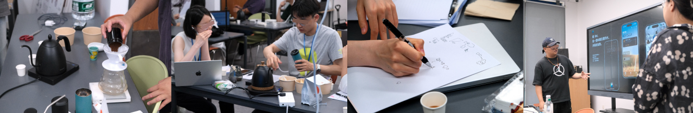

2025 / Participatory design
[PD] Configuring Participants as Covert Evaluators: Questioning Interpretive Authority in Technology Design
People are often included in smart technology design—consulted through interviews, invited into workshops, occasionally observed in their daily routines. These forms of involvement suggest care, attention, collaboration. Yet what follows is less clear. People's values are often recorded, analysed, abstracted—and ultimately reshaped by designers. The process of turning conversations into design decisions remains largely opaque. What gets translated, what gets left out, and who decides what matters?
In this work, we explored what it might mean to configure people not simply as sources of input, but as active evaluators throughout a smart technology design process.
The study took place in a two-day design workshop focused on pour-over coffee. Participants included coffee enthusiasts, interaction designers, and engineers. Pour-over brewing is slow, deliberate, and full of subtle variations. For many, it is not just a method, but a form of expression. We saw it as an ideal site for examining the tensions between expertise, routine, and automation.
Throughout the workshop, participants were invited not only to act as users and share their practices, but to observe and evaluate how those practices were being interpreted by the designers. They documented moments when their intentions felt misrepresented, their values overlooked, or assumptions misplaced.

We gave them structured workbooks with prompts like “Where did my priorities disappear?” and “What is being assumed about me here?” Some wrote quick notes during observations. Others took more time to compose responses. A few chose to sketch or generate their own smart coffee concepts—imagining systems that might support, rather than replace, the flow they valued.
This process revealed how certain values—ritual, rhythm, and personal interpretation—are easily displaced within user-centred design practices that prioritise legibility and generalisability over lived complexity. What surfaced through evaluation was not simply disagreement, but the presence of a different logic: one that is situated, aesthetic, and rarely made explicit.
In configuring people as evaluators, we uncovered not only alternative directions for design, but a clearer sense of what the process itself makes visible—and what it leaves out. When designers are the only ones interpreting what matters, particular ways of knowing become privileged. Making space for those assumptions to be questioned, from within, opens possibilities for other logics to emerge.
Xiao XUE, Shuang He, Mengyu Chen, Rui Zhang, Xinyi Fu